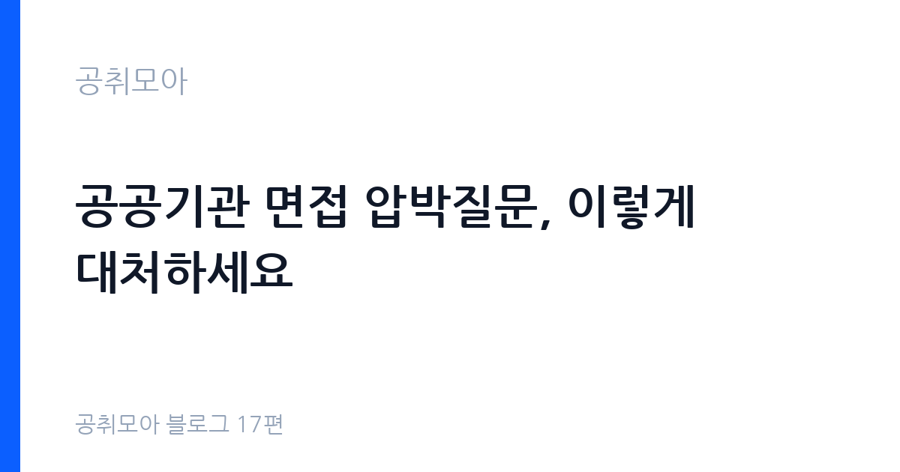

공공기관 면접 압박질문, 이렇게 대처하세요
2026-11-02 · 공취모아 블로그 17편

압박질문은 왜 나옵니까: 면접관이 보려는 3가지
압박질문의 첫 번째 의도는 감정 통제입니다. 날카로운 지적이나 공백 추궁이 나와도 목소리 톤과 표정, 말의 속도가 흐트러지지 않는지를 봅니다. 민원 응대나 현장 업무가 많은 공공기관 직무에서는 돌발 상황에 대한 평정심 자체가 직무 능력으로 평가됩니다. 대답 내용보다 대답하는 태도가 먼저 채점된다고 보시면 됩니다.
두 번째는 일관성입니다. 자소서와 앞 질문의 답변에서 한 말과 모순되는 말이 나오는지를 확인합니다. "협업을 잘한다"고 써 놓고 갈등 경험 질문에서 동료 탓을 하면 그 모순이 그대로 기록됩니다. 자소서에 쓴 문장마다 "이걸로 뭐가 더 물어볼 수 있지"를 달아 두는 것만으로 일관성 실수의 절반은 막으십니다.
세 번째는 직무 관점입니다. 곤란한 질문에서도 개인 사정이 아니라 직무와 기관의 언어로 답하는지를 봅니다. "왜 우리 기관입니까"에 대한 답이 연고지 이야기로 끝나면 감점이고, 기관의 올해 사업 방향과 본인 직무의 연결로 끝나면 가점입니다. 압박은 면접관을 이기는 게임이 아니라, 흔들리지 않고 직무로 돌아오는 게임입니다.
단골 압박질문 5유형과 답 구조
공공기관 면접에서 반복되는 압박질문은 유형이 정해져 있습니다. 유형별 예시와 답의 뼈대를 표로 정리해 드립니다. 모든 유형의 공통 구조는 결론 먼저(15초), 근거 1개(30초), 마무리 한 줄(15초)의 1분 답변입니다.
| 유형 | 예시 질문 | 답 구조 |
|---|---|---|
| 공백·이직 추궁 | 1년 공백에 뭐 하셨습니까 | 사실 1문장 → 그 기간에 한 일 1개 → 지금 지원과의 연결 |
| 스펙 공격 | 학점이 낮은데 업무가 되겠습니까 | 짧게 인정 → 보완 근거 1개(자격·실무·교육) → 직무 적용 한 줄 |
| 자소서 검증 | 쓴 협업 사례에서 본인 역할이 뭡니까 | 상황 10초 → 본인 행동 30초 → 결과 수치 없이 사실로 20초 |
| 기관 비판 유도 | 우리 기관의 문제점이 뭔가요 | 공개된 사실 1개 → 건설적 제안 1개, 비난·폭로 금지 |
| 최후통첩 | 떨어지면 어떡합니까 | 담담하게 인정 → 다음 계획 1개(재지원·보완), 비굴함 금지 |
기관 비판 유도형은 특히 조심하세요. 실제 문제점을 신나게 지적하면 비판 의식이 아니라 조직 부적응으로 읽힙니다. 기관 홈페이지와 보도자료에 이미 공개된 과제 1개를 골라 "알고 있다"는 신호와 "이렇게 기여하겠다"는 제안 1개로 닫으시면 됩니다. 모르는 문제를 아는 척하는 것보다 "그 부분은 확인해 보겠습니다"가 낫습니다.
절대 하시면 안 되는 반응 4가지
첫째, 변명 늘이기입니다. 1분 안에 끝낼 답을 3분으로 늘리면 변명으로 들립니다. 타이머를 켜고 연습할 때 60초를 넘기면 그 답은 다시 쓰세요. 둘째, 전 직장·학교·동료 탓입니다. 누구 탓을 하는 순간 면접관의 머릿속에서는 "우리 기관에서도 저러겠네"가 찍힙니다. 셋째, 10초 이상의 침묵입니다. 생각이 안 나면 "질문 감사합니다. 정리해서 말씀드리겠습니다"라는 멈춤 문장 1개로 시간을 버세요. 넷째, 지어낸 수치와 경력입니다. 검증 단계에서 하나만 틀려도 전체 답의 신뢰가 무너집니다. 없는 것은 없다고 말하고, 아는 범위에서 추론하는 편이 살길입니다.
남은 일주일 연습법
연습은 예상질문 10개 뽑기부터 시작하세요. 자소서 문단마다 꼬리질문 1개씩, 공백·이직·저학점 같은 약점마다 1개씩 뽑으면 10개가 됩니다. 그 10개를 휴대폰으로 녹음해 1분 답변으로 만드세요. 녹음을 들어보며 "그래서 결론이 뭐지"를 자문하시고, 결론이 15초 안에 안 나오면 그 답은 실패입니다.
실전 감각은 타이머 60초와 거울 앞에서 만드세요. 목소리 크기와 말속도, 시선 처리는 녹음으로 점검하고, 표정은 거울로 점검합니다. 스터디는 서로 다른 기관 준비생과 섞지 마시고, 같은 직렬 사람과 압박 역할극을 주고받는 용도로만 쓰세요. 전날에는 새 답변을 만들지 마시고 자소서와 지원서를 다시 읽으세요. 새벽에 외운 문장은 면접장에서 입에 안 붙습니다.
자주 묻는 질문
떨림 자체가 아니라 통제 상실이 감점입니다. 멈춤 문장 1개("질문 감사합니다. 정리해서 말씀드리겠습니다")와 물 한 모금을 루틴으로 만드세요. 3초의 정적이 떨리는 30초보다 낫습니다.
아닙니다. 압박질문 유무는 기관·면접관 스타일 차이일 뿐입니다. 화기애애한 면접에서 떨어지기도 하고, 압박 면접에서 붙기도 합니다. 신호 해석 말고 복기만 하세요.
자소서에 쓴 경험마다 날짜·역할·규모의 사실 3점을 별도 종이에 적어 두세요. 면접관이 파는 것은 미담이 아니라 사실관계입니다. 이 시리즈 3편의 지원동기 정리법과 함께 보시면 됩니다.
다음 편 예고: 면접 탈락 후 2주 루틴입니다
면접을 보고 나면 합격이든 탈락이든 2주의 시간이 생깁니다. 다음 18편에서는 탈락 통보를 받았을 때 감정에 매몰되지 않고 다음 합격을 위해 2주 안에 하실 일을 정리해 드립니다. 탈락은 끝이 아니라 유료로 산 데이터입니다. 이 글을 저장해 두셨다가 결과 발표일에 다시 읽어보시기 바랍니다.
함께 읽으면 좋은 글
이 글은 공취모아가 공개 자료를 정리한 정보 제공용 글입니다. 합격을 보장하지 않으며, 면접 형식·문항은 기관마다 다르니 원문 공고문과 기관 채용 안내를 기준으로 확인하시기 바랍니다. 제도·수치는 변경될 수 있으니 최신 고시를 확인하세요. (2026-11-02 기준)